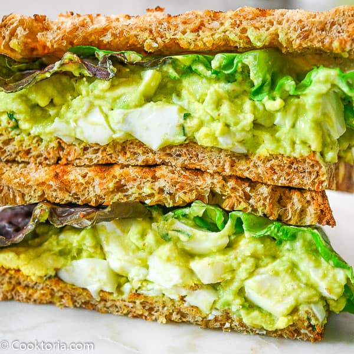

Avocado Egg Salad

Description:
A healthy, protein-packed, delicious spin on a classic! Ditch the mayo, try avo!
Traditionally, egg salad might include mayonaise and mustard, but try packing some extra nutrients with a different kind of creamy deliciousness in this two ingredient avocado-egg salad sandwhich!
Ingredients:
- 1 Hard boiled Egg
- 1 ripe avocado
- Salt and pepper to taste
Directions:
- Crack and peel a hard boiled egg. Slice into small chunks.
- Mash one avocado til smooth.
- In a bowl, mix until well combined. Light salt and pepper to taste.
- Smear on favorite bread or bagel! Add spinach or lettuce for a bit of crunch. Enjoy!